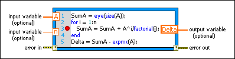

MathScript Node
Owning Palette: Scripts & Formulas VIs
Requires: MathScript RT Module
 | Note LabVIEW MathScript is no longer recommended for new designs. Visit ni.com/migratemathscript for more information and recommended alternatives. |
Executes LabVIEW MathScripts and your other text-based scripts using the MathScript RT Module engine. You can use the MathScript Node to evaluate scripts that you create in the LabVIEW MathScript Window.
If a MathScript Node contains a warning glyph, LabVIEW operates with slower run-time performance for the node. You can modify your script to remove the warning glyph from the MathScript Node and improve run-time performance.

 Add to the block diagram Add to the block diagram |
 Find on the palette Find on the palette |
Use this node to execute your scripts. Enter your script, which can contain built-in MathScript functions and user-defined functions, in the node or right-click the node border to import text into the node. Right-click the node border to add input and output variables. You can right-click an output variable to set its data type.
To display the data type of a variable in the Context Help window, click outside a MathScript Node and then move the cursor over a variable in the node. You also can move the cursor over a function to display information about the function in the Context Help window. When you create a LabVIEW MathScript, you must use supported data types.
| Note The MathScript Node and the LabVIEW MathScript Window can communicate only if they are in the same application instance. |
Resolving Warning Glyphs in MathScript Nodes
If you call a function from a MathScript Node that might change the MathScript search path list at run time or might introduce new variables at run time, a warning glyph, shown as follows, appears next to the line from which you call the function.
The warning glyph indicates that LabVIEW operates with reduced error checking at edit time and slower run-time performance for the MathScript Node. The following conditions cause the warning glyph to appear. To remove the warning glyph from the MathScript Node and improve run-time performance, modify your script as follows to resolve the condition in your script:
- Your script calls addpath or pathremove (legacy name rmpath), or calls cd, path, or userpath with one or more inputs, which change the MathScript search path list at run time. Remove these functions and use the MathScript page to configure the default search path list.
- Your script calls one of the following functions or keywords using its current or legacy name (legacy names in parentheses): break, clear, continue, eval, evalscript (evalc), exist, global, is_global (isglobal), is_member (isa), load, loaddialog (uiload), persistent, return, save, who, or who_all (whos). Remove these functions and keywords from your script.
- Your script references a .m file that contains a script rather than a user-defined function. Instead, copy the contents of your .m file into the MathScript Node or edit the .m file to be a user-defined function rather than a script.
- Your script calls a user-defined function with one of the conditions listed in the previous paragraphs. To identify your .m file that causes the warning glyph, select View»VI Hierarchy to display the VI Hierarchy window. The VI Hierarchy window places a warning glyph on .m files with these conditions and any .m files that call such .m files. Modify the .m files as appropriate.

Tip In a hierarchy of .m files, the lowest-level file that contains a warning glyph in the VI Hierarchy window is the one that causes the warning glyph to appear on the MathScript Node.
The LabVIEW Run-Time Engine and applications you deploy to real-time targets do not support MathScript Nodes with warning glyphs. If a VI includes a MathScript Node with a warning glyph, you must remove the warning glyph from the MathScript Node before you build a stand-alone application or shared library. If you build an application containing a MathScript Node with a warning glyph that a .m file causes, LabVIEW does not include that .m file in the application, and LabVIEW returns an error when you try to run the application.
The LabVIEW Run-Time Engine also does not support certain built-in MathScript functions. To include a MathScript Node in a stand-alone application or shared library, you might need to modify scripts that contain these unsupported functions.
Transferring MathScript Nodes between Computers
If a script in a MathScript Node calls a user-defined function, LabVIEW uses the default search path list to link the function call to the specified .m file. After you configure the default search path list and save the VI that contains the MathScript Node, you do not need to reconfigure the MathScript search path list when you open the VI on a different computer because LabVIEW looks for the .m file in the directory where the .m file was located when you last saved the VI. However, you must maintain the same relative path between the VI and the .m file.
Using Add-On MathScript RT Module Functions
Some LabVIEW modules and toolkits install additional MathScript RT Module functions. If you use these add-on MathScript RT Module functions in a MathScript Node, you might encounter unexpected behavior when transferring a VI that contains the MathScript Node between computers. If you move the VI to a computer that does not have the appropriate add-on installed, LabVIEW cannot find the add-on MathScript RT Module functions when you run the VI. LabVIEW therefore modifies the script in the MathScript Node slightly and returns an error. However, if you then save the VI and move it to a computer that does have the appropriate add-on installed, LabVIEW still returns an error when you run the VI. You must modify the script in the MathScript Node and save the VI again in order to resolve the errors.